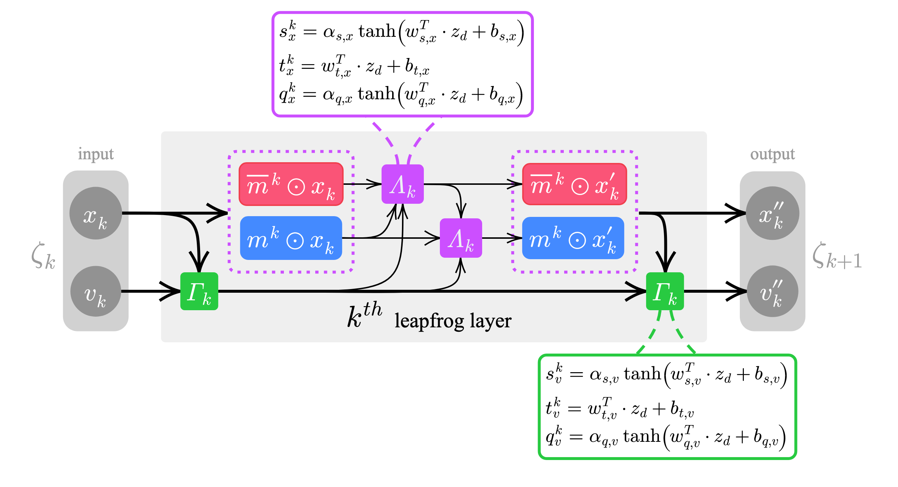

Contents
Overview
Papers 📚, Slides 📊 etc.
- 📊 Slides (07/31/2023 @ Lattice 2023)
- 📕 Notebooks / Reports:
- 📝 Papers:
- LeapfrogLayers: A Trainable Framework for Effective Topological Sampling, 2022
- Accelerated Sampling Techniques for Lattice Gauge Theory @ BNL & RBRC: DWQ @ 25 (12/2021)
- Training Topological Samplers for Lattice Gauge Theory from the ML for HEP, on and off the Lattice @ \mathrm{ECT}^{*} Trento (09/2021) (+ 📊 slides)
- Deep Learning Hamiltonian Monte Carlo @ Deep Learning for Simulation (SimDL) Workshop ICLR 2021
- 📚 : arXiv:2105.03418
- 📊 : poster
- 📚 : arXiv:2105.03418
- LeapfrogLayers: A Trainable Framework for Effective Topological Sampling, 2022
Background
The L2HMC algorithm aims to improve upon HMC by optimizing a carefully chosen loss function which is designed to minimize autocorrelations within the Markov Chain, thereby improving the efficiency of the sampler.
A detailed description of the original L2HMC algorithm can be found in the paper:
Generalizing Hamiltonian Monte Carlo with Neural Network
with implementation available at brain-research/l2hmc/ by Daniel Levy, Matt D. Hoffman and Jascha Sohl-Dickstein.
Broadly, given an analytically described target distribution, π(x), L2HMC provides a statistically exact sampler that:
- Quickly converges to the target distribution (fast burn-in).
- Quickly produces uncorrelated samples (fast mixing).
- Is able to efficiently mix between energy levels.
- Is capable of traversing low-density zones to mix between modes (often difficult for generic HMC).
Installation
It is recommended to install inside an existing virtual environment
(ideally one with tensorflow, pytorch [horovod,deepspeed] already installed)
From source (RECOMMENDED)
git clone https://github.com/saforem2/l2hmc-qcd
cd l2hmc-qcd
# for development addons:
# python3 -m pip install -e ".[dev]"
python3 -m pip install -e .Test install:
python3 -c 'import l2hmc ; print(l2hmc.__file__)'
# output: /path/to/l2hmc-qcd/src/l2hmc/__init__.pyTraining
Configuration Management
This project uses hydra for configuration management and supports distributed training for both PyTorch and TensorFlow.
In particular, we support the following combinations of framework + backend for distributed training:
- TensorFlow (+ Horovod for distributed training)
- PyTorch +
- DDP
- Horovod
- DeepSpeed
The main entry point is src/l2hmc/main.py, which contains the logic for running an end-to-end Experiment.
An Experiment consists of the following sub-tasks:
- Training
- Evaluation
- HMC (for comparison and to measure model improvement)
All configuration options can be dynamically overridden via the CLI at runtime, and we can specify our desired framework and backend combination via:
python3 main.py mode=debug framework=pytorch backend=deepspeed precision=fp16to run a (non-distributed) Experiment with pytorch + deepspeed with fp16 precision.
The l2hmc/conf/config.yaml contains a brief explanation of each of the various parameter options, and values can be overriden either by modifying the config.yaml file, or directly through the command line, e.g.
cd src/l2hmc
./train.sh mode=debug framework=pytorch > train.log 2>&1 &
tail -f train.log $(tail -1 logs/latest)Additional information about various configuration options can be found in:
src/l2hmc/configs.py: Contains implementations of the (concrete python objects) that are adjustable for our experiment.src/l2hmc/conf/config.yaml: Starting point with default configuration options for a genericExperiment.
for more information on how this works I encourage you to read Hydra’s Documentation Page.
Running at ALCF
For running with distributed training on ALCF systems, we provide a complete src/l2hmc/train.sh script which should run without issues on either Polaris or ThetaGPU @ ALCF.
Details
Goal: Use L2HMC to efficiently generate gauge configurations for calculating observables in lattice QCD.
A detailed description of the (ongoing) work to apply this algorithm to simulations in lattice QCD (specifically, a 2D U(1) lattice gauge theory model) can be found in arXiv:2105.03418.

Organization
Dynamics / Network
For a given target distribution, π(x), the Dynamics object (src/l2hmc/dynamics/) implements methods for generating proposal configurations (x’ ~ π) using the generalized leapfrog update.
This generalized leapfrog update takes as input a buffer of lattice configurations x and generates a proposal configuration x' = Dynamics(x) by evolving generalized L2HMC dynamics.
Network Architecture
An illustration of the leapfrog layer updating (x, v) --> (x', v') can be seen below.

Contact
Code author: Sam Foreman
Pull requests and issues should be directed to: saforem2
Citation
If you use this code or found this work interesting, please cite our work along with the original paper:
@misc{foreman2021deep,
title={Deep Learning Hamiltonian Monte Carlo},
author={Sam Foreman and Xiao-Yong Jin and James C. Osborn},
year={2021},
eprint={2105.03418},
archivePrefix={arXiv},
primaryClass={hep-lat}
}@article{levy2017generalizing,
title={Generalizing Hamiltonian Monte Carlo with Neural Networks},
author={Levy, Daniel and Hoffman, Matthew D. and Sohl-Dickstein, Jascha},
journal={arXiv preprint arXiv:1711.09268},
year={2017}
}Acknowledgement
Note
This research used resources of the Argonne Leadership Computing Facility, which is a DOE Office of Science User Facility supported under contract DE_AC02-06CH11357.
This work describes objective technical results and analysis.
Any subjective views or opinions that might be expressed in the work do not necessarily represent the views of the U.S. DOE or the United States Government.
Citation
@misc{foreman2023,
author = {Foreman, Sam},
date = {2023-09-06},
url = {https://saforem2.github.io/l2hmc-qcd},
langid = {en}
}